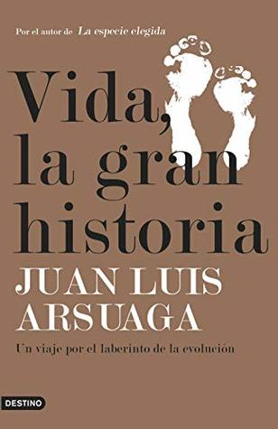

Vida, la gran historia: Un viaje por el laberinto de la evolución (Imago Mundi) (Spanish Edition)
Reseña por Jorge I. Zuluaga

Ver reseña en GoodReads (necesita cuenta)
Ya había leído algunos ensayos sobre evolución escritos por la impecable pluma de Richard Dawkins (aunque sé que no todos los biólogos evolutivos quieren a Dawkins, hay que reconocer que es una autoridad reconocida en el tema y lo ha sido por décadas), pero debo confesar que al lado de la pluma amable de Juan Luis Arsuaga, Dawkins es un verdadero ladrillo.
Este libro me ha introducido a un tipo de divulgación científica que no había conocido antes. Una divulgación honesta, escrita en un lenguaje claro pero no condescendiente con el lector no experto y, lo más sorprendente, increíblemente respetuosa de todas las posiciones frente a las discusiones en un área en la que todavía hay muchas preguntas abiertas.
El libro cuenta la historia de la vida hasta el surgimiento de Homo sapiens, pero no como lo haría cualquier libro de paleontología o biología, relatando los hechos más atractivos en esta grandiosa historia como si se sucedieran secuencialmente en una película asombrosa (aunque al principio parece así). La preocupación del autor está dirigida a que los lectores no expertos entendamos la manera como los biólogos, paleontólogos y antropólogos han ido "tejiendo" esa historia a partir de las evidencias encontradas en casi 200 años de investigación, desde los viajes de Darwin en el Beagle hasta el mundo de la inteligencia artificial del presente.
Por esa misma razón, el libro puede volverse bastante pesado (al menos lo fue para mí, que no soy biólogo) más o menos a partir del sexto capítulo (que el autor llama de forma romántica "Jornadas"): "La medida del progreso". Hasta allí, el libro se puede leer sin muchas dificultades.
A partir de este capítulo, sin embargo, comienza el reto intelectual más difícil. Y lo hace con la pregunta de si la evolución significa de alguna manera progreso; de si nuestra especie es el producto acabado de la evolución o un escalón más en la "caminata de un borracho".
La segunda parte del libro es definitivamente difícil de leer, pero sin lugar a dudas las últimas jornadas hacen que valga la pena darse una "pela" leyendo las muy difíciles discusiones que han tenido por décadas biólogos y paleontólogos sobre el lugar de Homo sapiens en el "plan" general de la evolución (si es que hay un plan).
He extraído algunos datos interesantes del libro que quiero compartir en esta reseña:
- "Una especie de pez óseo de aletas lobuladas del Devónico es sin duda el antepasado común de todos los tetrápodos existentes".
- "Si lo que cuenta es el número, la Tierra sigue siendo el planeta de los peces".
- "El término reptil ya no se usa en la sistemática biológica. A los antepasados de los mamíferos ya no se los llama reptiles, sino sinápsidos fósiles".
- "Hace dos millones de años, los antepasados de los delfines superaban a los nuestros en grado de encefalización, así que les hemos ganado en el sprint final".
- "Los mayores desarrollos de la encefalización se han dado en mamíferos cuya vida se desarrolla en grupos estables (sociales)".
- "El único patrón reconocible de la vida en su conjunto, desde sus orígenes, la única tendencia verdaderamente apreciable es la de expandirse continuamente, ocupar todos los rincones posibles del planeta".
- "El genoma es como una biblioteca de recetas en el que se ponen en práctica aquellas que sean realizables dadas las condiciones existentes en el entorno".
- "El nivel máximo de eusociabilidad (el de las sociedades más avanzadas) se ha alcanzado de dos maneras: entre los invertebrados, en los insectos sociales; y entre los vertebrados, en la especie humana".
- "No podríamos ser carnívoros si no fuera por las armas: somos el primate armado".
- "El auténtico desafío al que se enfrentaban nuestros antepasados no era la ecología, sino la necesidad de relacionarnos con nuestros congéneres en unas circunstancias sociales que se iban haciendo más complejas e impredecibles a medida que la evolución avanzaba".
- "En el comportamiento de los bonobos, la violencia reactiva es mucho más rara que en los chimpancés y la explicación está en que los grupos de bonobos están dominados por coaliciones de hembras, que impiden activamente que se interponga la agresividad masculina".
- Nos autodomesticamos. Los neandertales siguieron siendo salvajes hasta que se extinguieron.
- "Los neandertales no tenían bandera, es decir, identidad ideológica y cultural, solo parentesco biológico".
- "La microbiota se considera hoy en día un órgano del cuerpo humano, con un peso aproximado de 3 kilos, y su buen estado es esencial para la salud".
- "El viejo y el nuevo mundo eran dos placas de Petri de la evolución cultural, al haber permanecido separadas desde que se produjo el poblamiento de América hace unos 15.000 años".
- "El mejor modo de predecir el futuro es inventarlo".
Hice una video reseña del libro para una librería de Rionegro (Antioquia, Colombia) que pueden ver aquí: https://www.instagram.com/p/B_YGtGqJ4r0/